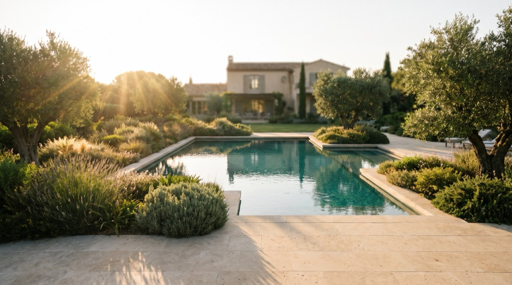
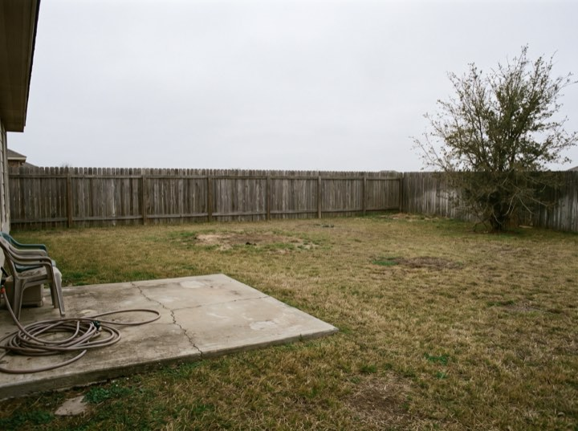
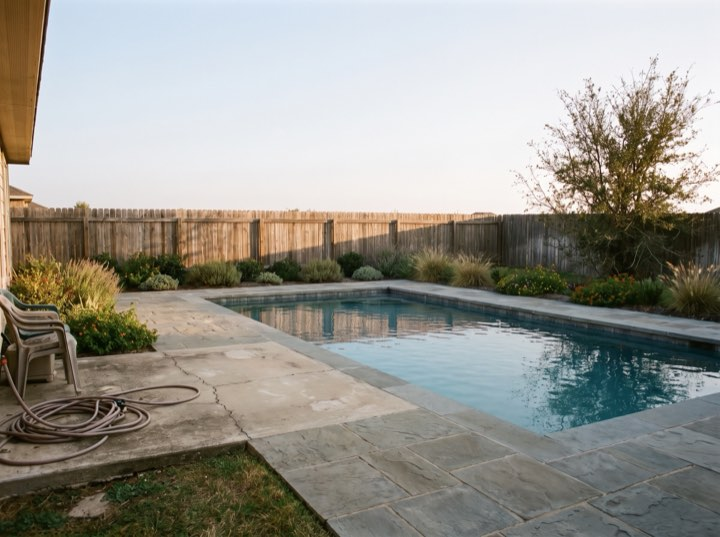
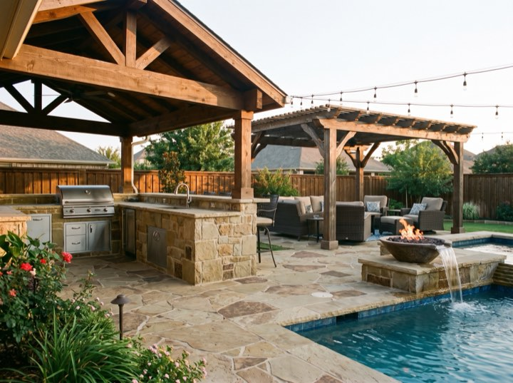
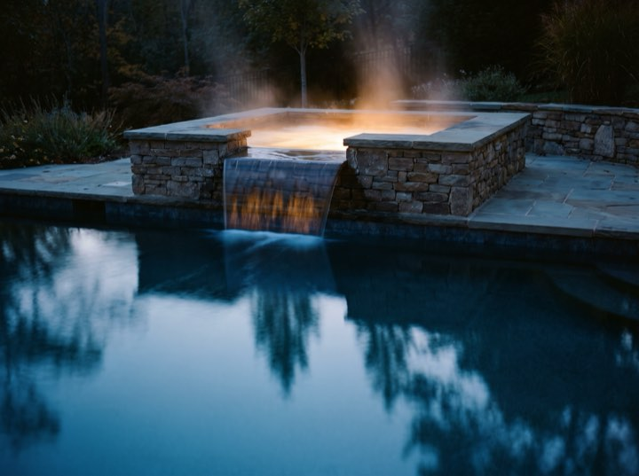
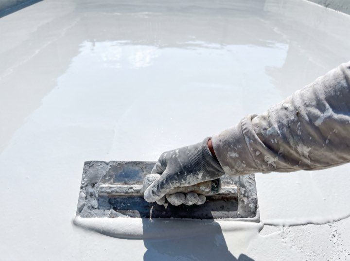

Gunite pools
Engineered, steel-reinforced and built to last decades. Any shape, because gunite doesn't come out of a mould.
Booking next season now
Gunite pools, spas and full outdoor living builds. Hardscape, planting, kitchen, pergola and lighting are designed with the pool rather than bolted on the summer afterwards.

Services
A pool is rarely just a pool. Most of our projects are the whole back garden reconsidered.
Engineered, steel-reinforced and built to last decades. Any shape, because gunite doesn't come out of a mould.
Integrated spas, spillovers, and the quiet engineering that keeps them warm without a ruinous bill.
Hardscape, outdoor kitchens, pergolas and lighting, designed together with the pool rather than bolted on after.
Older pools brought back: resurfacing, new tile and coping, and modern equipment that halves the running cost.
Results
"The 3D was accurate to the inch. What we saw is what we got."
Neil H. · Freeform gunite"Booked in winter, swam in June, exactly as promised."
Constance A. · Pool & spa"Financing meant we did the outdoor kitchen at the same time instead of never."
Tobias M. · Full outdoor living"Resurface took our 1990s pool to looking brand new."
Grace N. · RenovationProcess
Roughly nine months if you start in autumn, and considerably longer if you start in May with everyone else.
We visit, measure and talk about how you'd actually use it. Free, and no obligation to go further.
Your garden, rendered, with the pool in it. Change it as often as you like before there's a contract.
We handle drawings, engineering and the city. This is the stage that quietly takes months.
Excavation to first fill, typically eight to twelve weeks. We teach you the equipment and stay on call after.
The whole garden
Patio, planting, kitchen and pool designed as one drawing, so nothing is squeezed in afterwards.





Now is the conversation, because a garden designed as a whole has to be permitted and sequenced as a whole.
Free design consultations. 3D rendering included at no cost, no obligation.